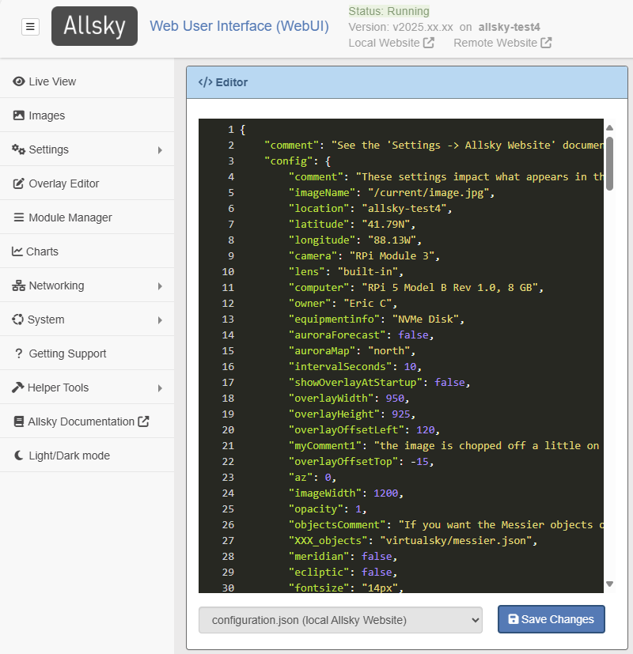

There WebUI contains many pages; the two used to changes settings are the Allsky Settings and Editor pages, and are described below.
"Allsky Settings" Page
This section lists the settings that are updated in the WebUI's Allsky Settings page. A (partial) typical page is below. The entries highlighted in yellow are Advanced entries that aren't changed very often; to see them, click on the Show advanced options... button on the bottom of the page.

RPi camera users, please note that several settings have different ranges on Buster versus Bullseye, so you'll need to update them when upgrading to Bullseye. For example, Brightness in Buster ranged from 0 (black) to 100 (white), whereas in Bullseye it's -100 to 100.
The exact list of settings available depends on your camera model; settings specific to a camera type (e.g., RPi or ZWO) are indicated as such. Where appropriate, the WebUI displays the minimum, maximum, and default values when you hover over a value, and only displays settings the camera supports, like cooler temperature for cooled cameras.
- Defaults for settings marked with CD are Camera Dependent and are displayed in the WebUI.
- When changed, settings with "(AW)" after them are uploaded to your Allsky Website(s).
| WebUI Setting | Default | Description |
|---|---|---|
| Daytime settings | ||
| Daytime Capture | Yes | Enable to capture images during the day. |
| Daytime Save (AW) | No | Enable to save images during the day (they are always saved at night). Only applies if Daytime Capture is enabled. |
| Auto-Exposure | Yes | Turns on/off Auto-Exposure, which delivers properly exposed images even if the overall brightness of the sky changes due to cloud cover, sun, etc. |
| Max Auto-Exposure | CD | The maximum exposure in milliseconds when using Auto-Exposure. When Auto-Exposure is on, this value will be used as the delay between frames. Ignored if Auto-Exposure is off. |
| Manual Exposure | 0.5 | Manual exposure time in milliseconds. If Auto-Exposure is on this value is used as a starting exposure. |
| Mean Target | 0.5 | (RPi only) The target mean brightness level when Auto-Exposure is on. Ranges from 0.0 (pure black) to 1.0 (pure white). Best used when both Auto-Exposure and Auto-Gain are enabled. |
| Brightness | CD | This setting changes the amount of light in images. |
| Delay | 5000 | Time in milliseconds to wait between the end of one image and the start of the next. |
| Auto-Gain | No | Turns on/off Auto-Gain which delivers properly exposed images even if the overall brightness of the sky changes. With RPi cameras, this should typically be turned on. With ZWO cameras you'll probably want this off and use the lowest gain possible since daytime images are bright and don't need any gain. |
| Max Auto-Gain | CD | Maximum gain when using Auto-Gain. Ignored if Auto-Gain is off. |
| Gain | CD | Gain is similar to ISO on regular cameras. When Auto-Gain is on, this value is used as a starting gain. When Auto-Gain is off, increasing this produces brighter images, but with more noise. |
| Binning | 1x1 | Bin 2x2 collects the light from 4 pixels to form one larger pixel on the image.
Bin 3x3 uses 9 pixels, etc.
Increasing the bin results in smaller, lower-resolution images and reduces the need for long exposure.
Look up your camera specifications to know what values are supported.
This variable is usually only changed during the day for testing. On CCD camera, binning normally produces brighter images. CMOS camera may, or may not produce brighter images, depending on the camera model. |
| Auto White Balance | No | Sets daytime auto white balance. When used, Red balance and Blue balance are used as starting points. |
| Red Balance | CD | The intensity of the red component of the image. |
| Blue Balance | CD | The intensity of the blue component of the image. |
| Frames To Skip | 5 | When starting Allsky during the day, skip up to this many images
while the auto-exposure software gets to the correct exposure.
Only applies if daytime Auto-Exposure is enabled. |
| Cooling | No | (ZWO only) Enable to use cooling on cameras that support it. |
| Target Temp. | 0 | (ZWO only) Sensor's target temperature when cooler is enabled. In degrees Celsius. |
| Tuning File | No | (RPi on Bullseye only) Name of the optional daytime tuning file. See this documentation for more information. |
| Nighttime settings
Unless otherwise specified, these setttings are the same as the daytime ones. |
||
| Auto-Exposure | Yes | |
| Max Auto-Exposure | CD | |
| Manual Exposure | 10000 | |
| Mean Target | 0.2 | (RPi only) |
| Brightness | CD | |
| Delay | 10 | |
| Auto-Gain | No | With ZWO cameras enabling Auto-Exposure and Auto-Gain together can produce unpredictable results so testing is needed. |
| Max Auto-Gain | CD | |
| Gain | CD | |
| Binning | 1x1 | |
| Auto White Balance | No | |
| Red Balance | CD | |
| Blue Balance | CD | |
| Frames To Skip | 1 | Only applies if nighttime Auto-Exposure is enabled. |
| Cooling | No | (ZWO only) |
| Target Temp. | 0 | (ZWO only) |
| Tuning File | No | (RPi on Bullseye only) |
| Both daytime and nighttime settings | ||
| Configuration File | [none] | Configuration file to use for settings. Not currently used. |
| Saturation | CD | (RPi only) Sets saturation from black and white to extra saturated. |
| Contrast | CD | (RPi only) Changes the difference between blacks and whites in an image. |
| Sharpness | CD | (RPi only) Changes the sharpness of an imgage. Images that are too sharp look unnatural. |
| Gamma | CD | (ZWO only) Increases or decreases contrast between dark and bright areas. |
| Offset | 0 | (ZWO only) Adds about 1/10 the specified value to every pixel, which brightens the whole image. |
| Aggression | 75% | (ZWO only) Specifies how much of a calculated exposure change should be made during auto-exposure. Lower numbers smooth out brightness changes but take longer to react to changes. |
| Gain Transition Time | 15 | (ZWO only) Number of minutes over which to increase or decrease
the gain when going from day-to-night or night-to-day images.
This helps smooth brightness differences.
Only works if nighttime Auto-Gain is off.
0 disables transitions. |
| Image Width | 0 | 0 uses the sensor's full width in pixels.
Otherwise, with ZWO cameras the
Image Width and Image Height
variables set a crop area around the center of the sensor,
the same as the CROP setting in
config.sh.
With RPi cameras these variables decrease resolution of the full-sensor image,
then increases the resolution, thereby negating the changes.
There is no reason to set the Width and
Weight with RPi cameras. |
| Image Height | 0 | Same as Width but for the sensor's height. |
| Image Type | auto | Image format: auto: automatically picks the best type of image based on the camera. If you have a color camera it will use RGB24; mono cameras use RAW16 if the output file is a .png, otherwise RAW8 is used. RAW8: 8-bit mono. RGB24: color (red, green, blue), 8 bits per channel. RAW16: 16-bit mono. |
| Quality | 95 | For JPG images, this specifies the quality - 0 (low quality) to 100 (high quality). Larger numbers produce higher-quality, but larger, files. For PNG, this is the amount of compression - 0 for no compression (but quicker to save) to 9 for highest compression (but slowest to save). If you use very short delays between pictures you may want to play with these numbers to ensure the quickest delay possible. |
| Mean Threshold | Yes | (RPi only) When using Mean Target, this specifies how close the target brightness should be to the Target. |
| Auto USB Bandwidth | Yes | (ZWO only) Automatically sets the USB bandwidth. |
| USB Bandwidth | CD | (ZWO only) How much of the USB bandwidth to use. |
| Filename (AW) | image.jpg | The name of the image file. Supported extensions are jpg and png. |
| Rotation | None | (RPi on Bullseye only) How to rotate the image. On Bullseye images can only be rotated 180 degrees. |
| Flip | No flip | How to flip the image (No flip, Horizontal, Vertical, or Both). |
| Notification Images | Yes | Displays notification images, e.g., "Camera off during day" if daytime images are not being taken. |
| Consistent Delays Between Images | Yes | Enable to force the time between the start of exposures to be a consistent length (Max Auto-Exposure + Delay). |
| Latitude (AW) | Latitude of the camera. Formats include: 123.4N, 123.4S, 123.4, or -123.4. Southern hemisphere is negative. | |
| Longitude (AW) | Longitude of the camera. Formats include: 123.4E, 123.4W, 123.4, or -123.4. West is negative. | |
| Angle (AW) | -6 | Altitude of the Sun above or below the horizon at which daytime and nighttime switch.
Can be negative (Sun below horizon) or positive (Sun above horizon).
|
| Take Dark Frames | No | Enable to take dark frames which are use to decrease noise in images.
See this page for an in-depth explanation of dark frames, including how to take and use them. |
| Use Dark Frames | No | Enable to perform dark frame subtraction at night.
Requires that you first took dark frames using the Take Dark Frames setting. |
| Locale | en_US.UTF-8 | Your locale, used to determine what the thousands and decimal separators are.
Type locale at a command prompt to see your choices (use the LC_NUMERIC entry). |
| Histogram Box | 500 500 50 50 | (ZWO only) X and Y size of histogram box in pixels and the middle point of the box in percent. This box is used to determine the average brightness of the image for auto-exposure compensation. If the Sun goes through the center of your image you may want to move the box. |
| Debug Level | 0 | Determines the amount of output in the log file.
Log entries can also be viewed with journalctl -u allsky.
0 outputs error messages only.
|
| Version 0.8 Exposure | Yes | (ZWO only) Determines if the new version 0.8 exposure method is used (video capture stops between images). This decreases the sensor temperature between 5 - 15 degrees Celsius. If you see ASI_ERROR_TIMEOUTs in the log file, try turning this off. See Issue 417. |
| Require WebUI Login | Yes | Determines if you need to log into the WebUI. If you Pi is accessible on the Internet, do NOT disable this!! |
| Always Show Advanced | No | Enable to always show the advanced options, which are typically not used very often, so are hidden. |
| Image overlay settings
See the
image overlay
page for details on the image overlay.
| ||
| External Overlay | No | Enable to have image overlays added by the new, enhanced external
overlay program.
When enabled, the overlay settings below do NOT apply. This setting will be turned on by default in the next Allsky release, and the internal overlay capability, as well as this "Image overlay settings" section of the WebUI will be removed. |
| Show Time | Yes | Display the time the picture was taken in the overlay? |
| Time Format | %Y%m%d %H:%M:%S | Determines the format of the displayed time.
Run man 3 strftime to see the options. |
| Show Temperature | Yes | (ZWO only) Display the camera sensor temperature in the overlay? |
| Temperature Units | Celsius | Determines what unit(s) the temperature will be displayed in (Celsius, Fahrenheit, or Both). |
| Show Exposure | Yes | Display the exposure time in the overlay? If Auto-Exposure is enabled, "(auto)" will appear after the exposure. |
| Show Gain | Yes | Display the gain in the overlay? If Auto-Gain is enabled, "(auto)" will appear after the gain. |
| Show Brightness | No | Display the brightness level in the overlay? |
| Show USB | No | (ZWO only) Display the USB Bandwidth in the overlay? This is primarily for debugging. |
| Show Mean Brightness | No | Display the mean (average) brightness in the overlay? This value is used to determine the correct auto-exposure and auto-gain levels. |
| Show Histogram Box | No | (ZWO only) Show the histogram box on the image? |
| Show Focus Metric | No | Display a focus metric in the overlay to help you focus the camera? Higher numbers are better, but only use when the brightness isn't changing. |
| Text Overlay | Text overlay that appears below the time, in the same font. | |
| Extra Text File | The full path name to a text file which will be displayed under other information. The file can contain multiple lines which will be displayed underneath each other. | |
| Max Age Of Extra | 0 | If you specified an Extra Text File
then it must be updated within this number of seconds;
if not it's contents will not be displayed.
Set to 0 to ignore this check and always display the contents of the file. |
| Line Height | 30 | The line height of the text displayed in the image. If you change the font size then adjust this value if required. |
| Text X | 15 | Start of text from the left side, in pixels. |
| Text Y | 35 | Start of text from the top, in pixels. |
| Font Name | Simplex | Font type for the overlay. |
| Font Color | 255 0 0 | Font color in Blue, Green, and Red (BGR). NOTE: When using RAW 16 only the first two values are used, i.e., 255 128 0. |
| Small Font Color | 0 0 255 | Small font color in BGR. NOTE: When using RAW 16 only the first two values are used, i.e., 255 128 0. |
| Font Smoothness | Antialiased | Controls the smoothness of the fonts. |
| Font Size | 7 | Font size. This is impacted by the sensor size so you'll need to experiment with this. |
| Font Weight | 1 | Font line thickness. |
| Use Outline Font | No | Should an outline to the text overlay be added to improve contrast? |
| Allsky Map and Website Setting
If you want your allsky camera's location to display on the Allsky map, the information in this section will be sent to the map server every other morning to ensure it's fresh. The server automatically removes old data. Note that only a limited number of updates per day are allowed to catch bogus updates. |
||
| Display Settings | No | People sometimes ask others what settings they are using.
Enable this setting to add a link to your Allsky Website's popout that displays your
settings in the WebUI's "Allsky Settings" page.
Only works if you are running the Allsky Website. |
| Show on Map | No | Enable to have your camera appear on the
Allsky map.
If off, the following settings are ignored. |
| Website URL | Your website's URL, for example: https://www.thomasjacquin.com/allsky.
If your camera is not accessible on the Internet or you do not want the
map page to link to your website, leave this field blank.
If a Website URL is specified, the Image URL must also be specified, and vice versa. | |
| Image URL | The URL to your allsky image, for example: https://wwww.thomasjacquin.com/allsky/image.jpg.
Right-click on the image and select Copy Image Address to determine what to
put in this field.
If you have the Allsky Website installed on your Pi and are using its image, you may need to set this field to <Pi name>/current/tmp/image.jpg or whatever's in the imageName field of your website's configuration.js file. Be careful of using "http" versus "https", and after enabling Show On Map, look at the map to ensure you can see your image. If your camera is not accessible on the Internet or you do not want the image to appear on the map page, leave this field empty. However, one of the main purposes of the map is to show pictures from cameras around the world, so adding your image URL is strongly encouraged. | |
| Location (AW) | The location of your camera. You can put any level of detail you want, but there's no need to enter the country since it will be obvious by looking at the map. | |
| Owner (AW) | The owner of the camera - your name, an association name, an observatory, etc. | |
| Camera (AW) | The type and model of your camera, for example: ZWO ASI224MC or RPi HQ. This field is required and a default value is set during Allsky installation. | |
| Lens (AW) | The lens you're using on your camera, for example: Arecont 1.55. | |
| Computer (AW) | The computer runni g your allsky camera, for example: Raspberry Pi 3. This field is required and a default value is set during Allsky installation. | |
| Latitude & longitude (AW) | These are described above and are
required for your camera to appear on the Allsky Map.
The actual values are not displayed on the map, but users can zoom in to see exactly where the camera is. If that bothers you, change their values slightly, but beware that these settings are also used to determine when your daytime and nighttime are so changing their values too much can impact your daytime/nighttime settings. | |
| Camera Type | ||
| Camera Type | The type of camera you are using: ZWO or RPi (which includes the HD and compatible models).
This is initially set during Allsky installation. | |
| Camera Model | This read-only field displays the model of camera you are using.
It is determined automatically based on what camera is connected to your Pi.
If more than one camera of the specified type is connected, the first one is used. | |
"Editor" Page
This section lists the settings that are updated in the WebUI's Editor page. A typical page is below:
Files that can be edited include config.sh, ftp-settings.sh, and if you have the Allsky Website installed, a local and/or remote configuration.json file. Further, if you have a endOfNight_additionalSteps.sh file, it can also be edited.
The tables below describe the settings in the config.sh and ftp-settings.sh files; settings in the configuration.json files are described in the Allsky Website Settings page.
Information on the color scheme used by the Editor is here .
config.sh settings
config.sh lets you configure the overall behavior of Allsky.| config.sh | ||
|---|---|---|
| Setting | Default | Description |
| image.jpg Settings | ||
| IMG_UPLOAD | false | Upload the current image to a local or remote Allsky Website?
Ignored if you don't have an Allsky Website. |
| IMG_UPLOAD_ORIGINAL_NAME | false | Should the name of the uploaded image be image.jpg (if false)
or image-YYYYMMDDHHMMSS.jpg (if true)?
This is rarely used and is ignored if you don't have an Allsky Website or IMG_UPLOAD is false. |
| IMG_UPLOAD_FREQUENCY | 1 | How often should the current image be uploaded?
This is useful for slow or costly networks.
This only applies if IMG_UPLOAD is "true". |
| IMG_DIR | current/tmp | Location of the image the website will use.
"current" is an alias for /home/pi/allsky.
Only change this if you know what you are doing. Ignored if you don't have an Allsky Website. |
| IMG_RESIZE | false | Resize images before cropping and stretching?
Large sensor cameras like the RPi HQ may need to be resized (i.e., shrunken)
in order for timelapses to work.
Typically you'll want the IMG_WIDTH / IMG_HEIGHT ratio to be the same as the sensor's width / height ratio, otherwise images will be distorted. |
| IMG_WIDTH | 1520 | The width of the resized image.
Must be an even number. The default is just an example. |
| IMG_HEIGHT | 2028 | The height of the resized image.
Must be an even number. The default is just an example. |
| CROP_IMAGE | false | Crop images before stretching? This is often used to remove most of the dark areas when using a fisheye lens. The image is cropped from the center so you'll need to experiment with the correct settings. Cropped images on the left or top will likely need the Text X and/or Text Y WebUI settings changed. |
| CROP_WIDTH | 640 | The width of the resulting image.
Must be an even number. The default is just an example. |
| CROP_HEIGHT | 480 | The height of the resulting image.
Must be an even number. The default is just an example. |
| CROP_OFFSET_X | 0 | The X offset to use when cropping. To move the crop rectangle left, use a negative number. |
| CROP_OFFSET_Y | 0 | The Y offset to use when cropping. To move the crop rectangle up, use a negative number. |
| AUTO_STRETCH | false | Stretch the image? This increases the contrast without saturating highlights or shadows. |
| AUTO_STRETCH_AMOUNT | 10 | How much to increase the contrast. 0 is none, 3 is typical, and 20 is a lot. |
| AUTO_STRETCH_MID_POINT | 10% | Where the maximum change "slope" in contrast should fall in the image (0% is white; 50% is middle-gray; 100% is black). |
| RESIZE_UPLOADS | false | Resize uploaded pictures?
You may want images on your Pi to have higher resolution than images uploaded to an Allsky Website. For example, images from cameras with large sensors won't fit on most monitors at full resolution, so huge images in some senses are a waste. |
| RESIZE_UPLOADS_SIZE | 962x720 | Sets the width x height of resized images being uploaded.
Must be even numbers. The default is just an example. |
| IMG_CREATE_THUMBNAILS | true | Create thumbnails of the images and save in ~/allsky/images? If you never look at them via the WebUI's "Images" page, consider changing this to "false". |
| REMOVE_BAD_IMAGES | true | Remove corrupt or too bright/too dark images and their
thumbnails before generating keograms, startrails, and timelapse videos?
We suggest always leaving this turned on; if images are being removed that you want to keep, change the THRESHOLDs below. |
| REMOVE_BAD_IMAGES_THRESHOLD_LOW | 1 | Images whose mean brightness is below this percent will be removed.
Set to 0 to disable this check.
Only applies if REMOVE_BAD_IMAGES is "true". |
| REMOVE_BAD_IMAGES_THRESHOLD_HIGH | 90 | Images whose mean brightness is above this percent will be removed (max: 100).
Set to 0 to disable this check.
Only applies if REMOVE_BAD_IMAGES is "true". |
| CAPTURE_EXTRA_PARAMETERS | Any additional capture parameters.
Rarely used.
Run ~/allsky/capture_ZWO --help or ~/allsky/capture_RPi --help
for a list of options.
|
|
| Timelapse Settings | ||
| TIMELAPSE | true | Build a timelapse video at the end of the night? |
| TIMELAPSEWIDTH | 0 | Override the width of the generated timelapse; must be an even number.
0 uses the images's full size.
Large sensor cameras like the RPi HQ often need the timelapse to be shrunk in order for timelapses to work (or the individual images need to be shrunk). |
| TIMELAPSEHEIGHT | 0 | Override the height of the generated timelapse; must be an even number.
0 uses the images's full size.
If you change the width and height you'll probably want the resulting aspect ratio to match the original images. |
| TIMELAPSE_BITRATE | 2000k | Bitrate the timelapse video will be created with.
Higher values produce better quality video but larger files.
Be sure to include the trailing k. |
| FPS | 25 | The timelapse video
Frames
Per
Second.
Higher numbers produce smoother, but shorter, videos. |
| VCODEC | libx264 | Encoder used to create the timelapse video. Rarely changed. |
| PIX_FMT | yuv420p | Pixel format.
If you don't know what this is, don't change it. |
| FFLOG | warning | Level of debugging information output when creating a timelapse.
Set to info for more output. |
| KEEP_SEQUENCE | false | Keep the sequence of symbolic links created when creating a timelapse?
Primarily used when debugging. |
| TIMELAPSE_EXTRA_PARAMETERS | Any additional timelapse parameters. Run ffmpeg -? to see the options. |
|
| UPLOAD_VIDEO | false | Upload the timelapse video to your Allsky Website? |
| TIMELAPSE_UPLOAD_THUMBNAIL | false | Upload the timelapse video's thumbnail to your Allsky Website?
Many remote servers don't support thumbnail creation so the thumbnail needs to be
created on the Pi and uploaded.
Not needed if your only Allsky Website is on your Pi. |
| Mini Timelapse Settings | ||
| TIMELAPSE_MINI_IMAGES | 0 | A "mini" timelapse only includes the most recent images,
and is created often.
It's a good way to see "recent" activity.
This setting determines the number of images in the mini timelapse.
Keep in mind the more images you have the longer it'll take to create the video.
10 - 15 is a good starting point.
Note that each mini timelapse overwrites the prior one. The following settings only apply if this settings is greater than 0. |
| TIMELAPSE_MINI_FREQUENCY | 5 | After how many images should the mini timelapse be created?
Slower machines and machines with slow networks should use higher numbers.
3 - 5 works well on a Pi 4 with 4 GB memory.
Every TIMELAPSE_MINI_FREQUENCY images a new mini timelapse is created using the last TIMELAPSE_MINI_IMAGES images. For example, every 5 frames a new mini timelapse is created using the most recent 15 images. |
| TIMELAPSE_MINI_UPLOAD_VIDEO | true | Like UPLOAD_VIDEO but for mini timelapses. |
| TIMELAPSE_MINI_UPLOAD_THUMBNAIL | true | Like TIMELAPSE_UPLOAD_THUMBNAIL but for mini timelapses. |
| TIMELAPSE_MINI_FPS | 2 | Like FPS but for mini timelapses.
Since mini timelapses contain a very small number of images, this setting should be small to avoid very short videos. |
| TIMELAPSE_MINI_BITRATE | 1000k | Like TIMELAPSE_BITRATE but for mini timelapses.
This is normally smaller than a full timelapse to save on processing time. |
| TIMELAPSE_MINI_WIDTH | 1014 | Like TIMELAPSEWIDTH but for mini timelapses.
Must be an even number. The default is just an example. |
| TIMELAPSE_MINI_HEIGHT | 760 | Like TIMELAPSEHEIGHT but for mini timelapses.
Must be an even number. The default is just an example. |
| Keogram Settings | ||
| KEOGRAM | true | Build a keogram image at the end of the night? |
| KEOGRAM_EXTRA_PARAMETERS | various | Additional keogram parameters. Execute ~/allsky/keogram --help for a list. |
| UPLOAD_KEOGRAM | false | Upload the keogram image to your Allsky Website? |
| Startrails Settings | ||
| STARTRAILS | true | Build a startrail image at the end of the night? |
| BRIGHTNESS_THRESHOLD | 0.1 | Average brightness level above which images are discarded (moon, head lights, aurora, etc.).
If you are only getting very short trails, or none at all, adjust this number.
Values are 0.0 (pure black, filters out nothing) to 1.0 (pure white, uses every image). |
| UPLOAD_STARTRAILS | false | Upload the startrails image to your Allsky Website? |
| Other Settings | ||
| THUMBNAIL_SIZE_X | 100 | Sets the width of thumbnails. |
| THUMBNAIL_SIZE_Y | 75 | Sets the height of thumbnails.
These numbers determine the size of the thumbnails in ~/allsky/images as well as any thumbnails created by the Allsky Website. Although changing these will change the size of the thumbnails, no testing has been done to see if there are negative side effects. |
| DAYS_TO_KEEP | 14 | Number of days' data to keep before starting deleting. Set to blank ("") to keep ALL days' data. |
| WEB_DAYS_TO_KEEP | 28 | Number of days' of web data to keep before starting deleting.
Set to blank ("") to keep ALL days' web data.
This only applies to Allsky Websites on the Pi. |
| POST_END_OF_NIGHT_DATA | false | Send data to your Allsky Website at the end of each night? Installing the Allsky Websit automatically sets this to "true". |
| WEBUI_DATA_FILES | One or more colon-separated full path names to text files that contain user-supplied data to display on the WebUI's System page. See the WEBUI_DATA_FILES section for more information and an example of this setting. | |
| UHUBCTL_PATH | If you have the uhubctl command installed enter its path name.
uhubctl resets the USB bus and can sometimes eliminate ASI_ERROR_TIMEOUTs. |
|
| UHUBCTL_PORT | 2 | Enter the USB port the camera is on. Port 1 is USB 2.0 and port 2 is USB 3.0 on a Pi 4. |
| Do not change anything lower in the file | ||
ftp-settings.sh settings
In order to upload files to your Allsky Website (on the Pi and/or a remote server), connection details must be specified in ftp-settings.sh.
The WEB_*_DIR variables below are optionally used to copy a file to an Allsky Website on the Pi AND upload it to a remote Allsky Website.
In the table below, "remote" refers to a location that's not on the Pi (which may be an Allsky Website or simply a directory on another server), and "local" refers to an Allsky Website on the Pi.
YOU must create the remote directories. Directories on the Pi are created during Allsky Website installation.
| ftp-settings.sh | ||
|---|---|---|
| Configuration | Default | Description |
| PROTOCOL | How the file should be uploaded:
|
|
| image.jpg Settings | ||
| IMAGE_DIR | The remote directory where the current image should go. | |
| WEB_IMAGE_DIR | The local directory where the current image should go. | |
| Timelapse Settings | ||
| VIDEOS_DIR | The remote directory where the timelapse video should go. | |
| VIDEOS_DESTINATION_NAME | Remote name of the timelapse video file. If not specified it's the same name as the file being uploaded. | |
| WEB_VIDEOS_DIR | Location on the Pi to copy the timelapse video to. | |
| Keogram Settings | ||
| KEOGRAM_DIR | The remote directory where the keogram image should go. | |
| KEOGRAM_DESTINATION_NAME | Remote name of the keogram image file. If not specified it's the same name as the file being uploaded. | |
| WEB_KEOGRAM_DIR | Location on the Pi to copy the keogram file to. | |
| Startrails Settings | ||
| STARTRAILS_DIR | The remote directory where the startrails image should go. | |
| STARTRAILS_DESTINATION_NAME | Remote name of the startrails file. If not specified it's the same name as the file being uploaded. | |
| WEB_STARTRAILS_DIR | Location on the Pi to copy the startrails file to. | |
| Other Settings | ||
| REMOTE_HOST | Remote server DNS name or IP address. | |
| REMOTE_USER | Your remote user name. | |
| REMOTE_PASSWORD | Your ftp / ftps / sftp password. | |
| REMOTE_PORT | An optional port number for lftp. Is rarely needed. |
|
| LFTP_COMMANDS | An optional colon-separated (;) list of commands needed by the lftp command.
See this page
for example commands to enter into LFTP_COMMANDS.
|
|
| scp Settings | ||
| SSH_KEY_FILE | Path to the SSH key file | |
| S3 Settings | ||
You need to install the AWS Command-Line Interface (CLI):
sudo apt-get install python3-pip pip3 install awscli --upgrade --user export PATH=/home/pi/.local/bin:$PATH aws configureWhen prompted, enter a valid access key ID, Secret Access Key, and Default region name, for example, (e.g. "us-west-2"). Set the Default output format to "json" when prompted. |
||
| AWS_CLI_DIR | /home/pi/.local/bin | Directory on the Pi where the AWS tools are installed.
If you used a different PATH variable above, change this setting to match it. |
| S3_BUCKET | allskybucket | Name of S3 Bucket where the files will be uploaded (must be in Default region specified above). |
| S3_ACL | private | S3 Access Control List.
If you want to serve your uploaded files vis http(s), change this to "public-read".
You will need to ensure the S3 bucket policy is configured to allow public access to
objects with a public-read ACL.
You may need to set a CORS policy in S3 if the files are to be accessed by Javascript from a different domain. |
| GCS Settings | ||
| GCS_BUCKET | allskybucket | Name of S3 Bucket where the files will be uploaded. |
| GCS_ACL | private | GCS Access Control List. You can use any one of the predefined acl rules found here. To access files over https, set this to "publicRead". |
If you have the Allsky Website only on your Pi, set these variables:
PROTOCOL="local" IMAGE_DIR="" VIDEOS_DIR="/home/pi/allsky/html/allsky/videos" KEOGRAM_DIR="/home/pi/allsky/html/allsky/keograms" STARTRAILS_DIR="/home/pi/allsky/html/allsky/startrails"
If you are using SSH Key with Amazon's Lightsail, copy the ssh-key.pem.pem file to your Pi, for example, in ~, then execute
chmod 400 ~/ssh-key.pem and set these variables:
PROTOCOL="sftp" REMOTE_HOST="remote host name" REMOTE_USER="remote user name" REMOTE_PASSWORD="n/a" LFTP_COMMANDS="set sftp:connect-program 'ssh -a -x -i /home/pi/ssh-key.pem'"
WEBUI_DATA_FILES tutorial
The WEBUI_DATA_FILES setting in config.sh allows you to specify a list of file names that contain information and buttons to add to the WebUI System page. The data can be anything you want, but often contains weather and/or fan data.
You need to provide script(s) to create file(s) in the format specified below.This tutorial assumes you are familiar with writing scripts; if so, the changes needed to implement WEBUI_DATA_FILES are very easy, despite the length of this tutorial.
Each file listed in the WEBUI_DATA_FILES
variable contains one or more lines.
Blank lines and lines that begin with # are ignored.
The remaining lines must contain the fields listed in the tables below,
separated by tabs.
Each of these lines has its own entry on the System page.
There are three types of lines in a data file. The first word of a line determines what type of line it is:
- data lines specify basic, two-column information that goes before the first progress bar.
These lines are good when the data has no associated status, for example,
a simple on/off value, like:
Dew heater: on. - progress lines display as progress bars like the CPU temperature bar on the System page. Your bars go after the last system-supplied progress bar and are good when the data has an associated status, for example, when the CPU is too hot its bar turns red.
- button lines add a button to the page under the last system-supplied button, and are used to initiate an action like turning a dew heater on.
- The first table column lists the purpose of the field.
- The second column lists the type of data the field contains.
- The third column describes the field.
- The fourth column states whether or not the field typically changes when the data is updated.
| "data" Fields | Field Type | Description | Typically Changes |
|---|---|---|---|
| type | text | Must be data. Defines the line type. | Never. |
| timeout | integer | Number of seconds after the data file was created that the data should expire.
0 disables the check.
Expired data is displayed in red with "(EXPIRED)" appended to the label. |
No. |
| label | text | The name for this data, for example: Ambient temperature. |
No. |
| data | text | The actual data - what should appear in the second column on the web page. For example, for "20 C". | Yes - every time new data is written to the file. |
| "progress" Fields | Field Type | Description | Typically Changes |
|---|---|---|---|
| type | text | Must be progress. | Never. |
| timeout | integer | Number of seconds after the data file was created that the data should expire.
0 disables the check. Expired data is displayed in red with
"(EXPIRED)" appended to the label.
|
No. |
| label | text | The name for this data, for example: "Dew point". | No. |
| data | text | The actual data to appear in the progress bar. Typically a number followed by an optional unit specifier, for example, "20 C" for temperature, but could be any text. | Yes - every time new data is written to the file. |
| minimum value | integer | The minimum possible value of current value; often 0,
but for a temperature will usually be negative.
|
No. |
| current value | integer | The current value of the data. This determines how wide the progress bar is. Will typically be the same as data without the unit specifier, for example, "20". This value should be between minimum value and maximum value inclusive. | Yes - every time new data is written to the file. |
| maximum value | integer | The maximum possible value of current value; often 100,
especially for percents.
For a temperature, use the highest value you expect the temperature to be.
|
No. |
| danger | integer | A current value greater than or equal to the danger value causes the progress bar to turn red. | No. |
| warning | integer | A current value greater than or equal to the warning value and less than the danger value causes the progress bar to turn amber. The progress bar will be green for any value less than warning. | No. |
| "button" Fields | Field Type | Description | Typically Changes |
|---|---|---|---|
| type | text | Must be button. | Never. |
| message | text | An optional status message that should appear near the top of the page after the
button is pressed and the button command was successful.
For example, "Dew heater turned on".
If not successful an error message is displayed containing any output from the command.
Use - to indicate no message should be displayed on success
(error messages will still be displayed).
|
No. |
| command | text | The program that should be executed when the button is pressed.
For example, /home/pi/turn_on_dew_heater.sh.
If needed you can prepend sudo |
No. |
| button color | text | The button's color. Choices are: red, green, blue, yellow, cyan, white, and black. | No. |
| FA icon | text | The Fonts Awesome (FA) icon on the button.
For example, the right-facing triangle on the "Start allsky" button has an
FA icon of "play".
If you don't want an icon on the button, enter -.
|
No. |
| button label | text | What should appear on the button face, for example, "Enable dew heater". | No. |
Example
Let's assume you have a weather station that provides the ambient temperature, humidity, and dew point, and the dome over your camera has a dew heater. You wrote a script called /home/pi/weather/getWeatherData.sh that polls the weather station and writes the ambient temperature, humidity, and dew point to a file called /home/pi/weather/weatherdata.txt every minute. You must manually turn the dew heater on and off via a Python script called /home/pi/dewheater/toggleDewHeater.py. The toggleDewHeater.ph command toggles the status of the dew heater and writes the new status (either "on" or "off") to /home/pi/dewheater/status.txt whenever you call the program.To get all this working, follow the steps below:
Determine what data you want to display.
You want to display the temperature, humidity, dew point, and dew heater status. You will use both the humidity and dew point numbers to determine if you should turn the dew heater on or off via a toggle button you will add to the web page. You want the ambient temperature in Celsius and Fahrenheit.You will add the following to the WebUI's System page:
- temperature
- humidity
- dew point
- dew heater status
- a button to toggle the dew heater on/off
Determine what you want to call the items
This is pretty easy. You will set the label fields for the temperature, humidity, dew point, and dew heater status to "Ambient temperature", "Humidity", "Dew point", and "Dew heater status" respectively. The dew heater toggle button will have a button label of "Toggle dew heater".Determine how you want the data displayed
The temperature is just a number with no "good" or "bad" value so you will display it as "data".Although the dew point is also just a number, you want to highlight it when it's getting close to the ambient temperature so you'll know it's possible for dew to form. Hence, you'll display it as a "progress" bar.
If the humidity gets too high you want to call attention to it, so you'll display it as a "progress" bar.
The dew heater toggle switch will be a "button".
Determine expiration timeout
If the weather data gets too old it may fool you into turning the dew heater off when it should remain on, so you want its data to expire. Your weather station provides new data every minute. If it misses a minute or two you don't want the data on the System page to turn red, so you will set the temperature and dew point timeout fields to 300 (5 minutes). Just for fun you will set the humidity timeout value to 600 (10 minutes).The dew heater status information doesn't change unless you manually turn it on or off, so you don't want it's status to expire, hence will use 0 for its timeout value.
Timeout values don't apply to buttons.
For "progress" bars, determine the "danger" and "warning" cutoffs and "minimum value" and "maximum value"
You've noticed that when the humidity gets above 90% you get dew on the inside of the dome, so you will set the dew heater danger value to 85. You aren't sure what to use for the warning value so you'll initially set it to 75, and will adjust it later if needed. By definition humidity ranges from 0% to 100% so use 0 and 100 for its minimum value and maximum value respectively.
The cutoffs for the dew point will vary based on the temperature so will require some logic in
getWeatherData.sh.
Let's say you decide to set the dew point danger cutoff to be 90% of the ambient temperature,
and the warning cutoff to be 80%.
This means if the ambient temperature is 20 C, the dew point danger cutoff would be
18 C (20 * 0.9) and the warning cutoff would be 16 C (20 * 0.8).
You aren't interested in dew point values significantly less than the ambient temperature since
the chance of dew in those cases is almost zero, so you'll set the dew point minimum value
to the ambient temperature minus 5 degrees.
Likewise, you aren't interested in dew point values significantly greater than the
ambient temperature since it's almost certain there will be dew, so you'll set the maximum value
to the dew point danger value plus 3 degrees.
This in effect sets the left side of the progress bar to be (ambient - 5) and the
right side of the bar to be (danger + 3).
[This may be confusing now, but will clear up when you see what it
looks like and play around with different values.]
The other items are of type "data" and "button" so this step doesn't apply to them.
Determine what button(s) should look like
You like green so will make the dew heater toggle button green by specifying its button color as "green".
You want an icon on the button since the other buttons have icons,
so you go to the Font Awesome
web page to look for an icon (Allsky uses Font Awesome version 4.7).
You pick the "random" icon so will set the button's FA icon field to random.
Modify the WEBUI_DATA_FILES variable
You need to enter the names of your files in the
WEBUI_DATA_FILES variable of the
config.sh file,
but how many files should you have?
You could put everything in one file but you have two scripts that create files
and would need to coordinate between them so they don't overwrite each other.
You decide on three data files - one with the weather data, one with the dew heater status,
and one with the dew heater button information.
You could have put the button information in the first or second file,
but to simplify the toggleDewHeater.ph
script you put it in a 3rd file that will never change.
You call the 3rd file /home/pi/dewheater/button.txt.
This is what you use:
WEBUI_DATA_FILES="/home/pi/weather/weatherdata.txt:/home/pi/dewheater/status.txt:/home/pi/dewheater/button.txt
The file names must be full path names and must be separated by colons (":").The "data", "progress", and "button" lines in the first file will come first on the System page; those in the second file will come second on the System page, etc. You can change the order items appear on the System page by changing the order of files in the WEBUI_DATA_FILES variable.
Create/modify scripts to update the data file(s)
The getWeatherData.sh script needs to write the three weather "data" lines to /home/pi/weather/weatherdata.txt. It helps if you have the script create header lines in the output file so you remember what field is what.The program's logic would be:
- Get the data from the hardware.
- Optionally write the "data" header line to /home/pi/weather/weatherdata.txt.
- Calculate the Fahrenheit ambient temperature based on the Celsius value returned by the hardware.
- Append the Ambient temperature "data" line to the file.
- Optionally append the "progress" header line to the file.
- Calculate new danger, warning, minimum value, and maximum value numbers for the Dew point based on the ambient temperature.
- Append the Dew point "progress" line to the file.
- Append the Humidity "progress" line to the file.
- Wait for the next update from the hardware, then go back to step 1.
# Type Timeout Label Data
data 300 Ambient temperature 20 C (68 F)
# Type Timeout Label Data Min Current Max Danger Warning
progress 300 Dew point 17 C 12 17 21 18 16
progress 600 Humidity 87% 0 87 100 85 75
Note all fields are separated by tabs.
The header lines (which are ignored since they begin with "#") can be in any format,
so to make it easier to make sure you have the correct fields you added multiple
spaces between their columns to line them up with the data fields below.
The toggleDewHeater.py program needs to write the "data" line for the dew heater status to /home/pi/dewheater/status.txt every time it is executed. Its logic is:
- Get the dew heater status from the hardware.
- Toggle the status.
- Optionally write the "data" header line to /home/pi/dewheater/status.txt.
- Append the new dew heater status "data" line to the file.
- Output "Dew heater turned on" or "Dew heater turned off".
- Exit.
# Type Timeout Label Data
data 0 Dew heater status on
Since the toggle button won't change, create the
/home/pi/dewheater/button.txt file manually:
# Type message command Color FA icon Button Label
button - /home/pi/dewheater/toggleDewHeater.py green random Toggle dew heater
Notice the message field is "-" which means there's no message to display on success.
This is because the toggleDewHeater.py
command outputs "Dew heater turned on"
or "Dew heater turned off", and that output is displayed as a message.
Remember that if toggleDewHeater.py exits with a failure
(i.e., a non-0 exit code)
any error message it outputs will be displayed as an error message on the web page so you
should make sure those error messages are useful.
When you press the "Toggle dew heater" button or call toggleDewHeater.py from the command line, it will update the /home/pi/dewheater/status.txt file by changing the "off" to "on" or vice versa. The rest of the file remains the same.
Commands listed in a button's command field must be executable by the web server running as group www-data, and must be in a directory that web server has permissions to get to. chmod g+x /home/pi/dewheater/toggleDewHeater.py will fix permissions on the command.
Test, test, test. Then test some more.
To get a feel for what things look like and how the above actually works, copy/paste the above file examples to /home/pi/weather/weatherdata.txt, /home/pi/dewheater/status.txt, and /home/pi/dewheater/button.txt files on your Pi. Then add
WEBUI_DATA_FILES="/home/pi/weather/weatherdata.txt:/home/pi/dewheater/status.txt
to config.sh via the WebUI's Editor page.
Now, go to the System page in the WebUI and in addition to the normal information you should see the items you added.
Refreshing the screen won't change those items since the data files are not being updated yet.
Clicking the "Toggle dew heater" button should display a red message at the top of the web page that says "'/home/pi/dewheater/toggleDewHeater.py' failed: sh: 1: /home/pi/dewheater/toggleDewHeater.py: not found". That's the output when the web page tried to execute '/home/pi/dewheater/toggleDewHeater.py' which doesn't exist.
Try making changes to the three files you created. For example, change the command for the button to "echo Hello, world!". When you next click on the button you should see a green message at the top saying "Hello, world!". Now change it to "echo Hello, world!; exit 1". What happens now?
After you understand what's happening and why, start modifying your script(s) to put your own data into the required format.Tips
To see what the button colors look like, add the following lines to /home/pi/dewheater/button.txt:button - /home/pi/dewheater/toggleDewHeater.py red random red button - /home/pi/dewheater/toggleDewHeater.py green random green button - /home/pi/dewheater/toggleDewHeater.py blue random blue button - /home/pi/dewheater/toggleDewHeater.py yellow random yellow button - /home/pi/dewheater/toggleDewHeater.py cyan random cyan button - /home/pi/dewheater/toggleDewHeater.py white random white button - /home/pi/dewheater/toggleDewHeater.py black random black
Troubleshooting
If you get a message about the first field needing to be "data", "progress", or "button" but those words ARE at the beginning of a line, the fields probably aren't separated by tabs. If you get a message saying you don't have the correct number of fields, count them to verify, and make sure the fields are separated by tabs, not spaces.[MORE TO COME ...]
These color balances work for some people on Buster (raspistill):
- RPi HQ Red: 3.24, Blue: 1.47
- RPi HQ no AWB, Red: 2.8, Blue: 2.2, Saturation: 40
- IR filter in place: Saturation: 1.4, AWB, Red: 3.47, Blue: 1.6
- IR filter removed: Saturation: 0.5, no AWB, Red: 1.0, Blue 1.6